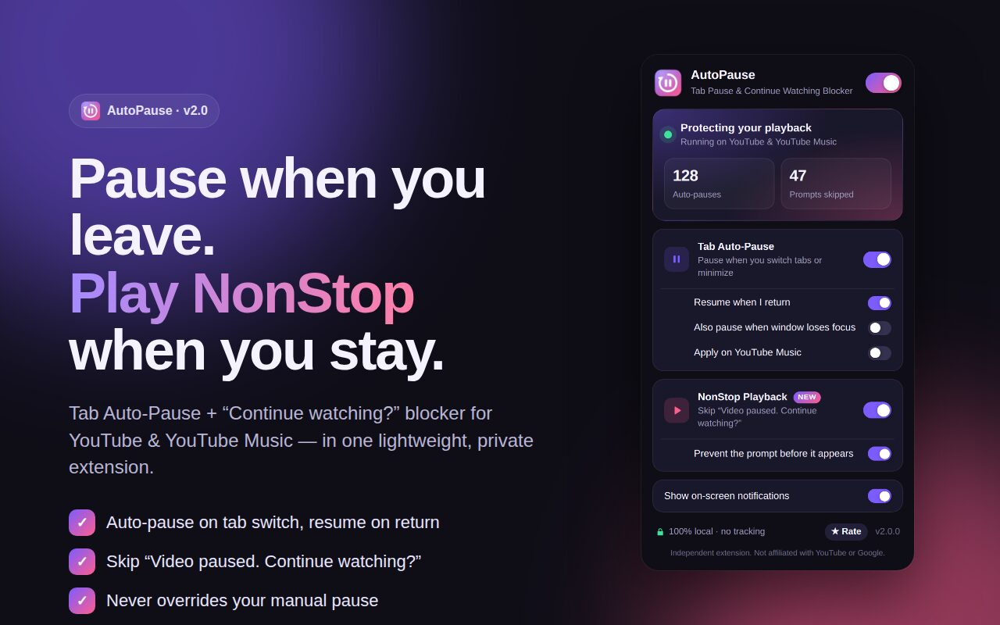
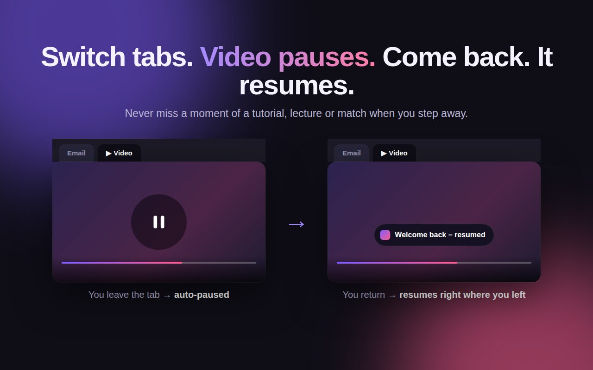
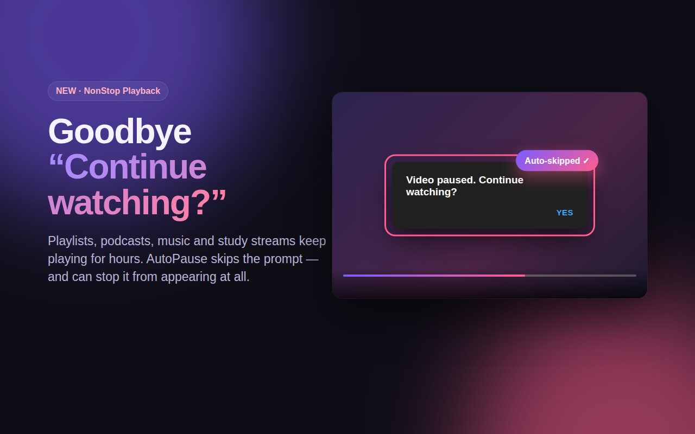
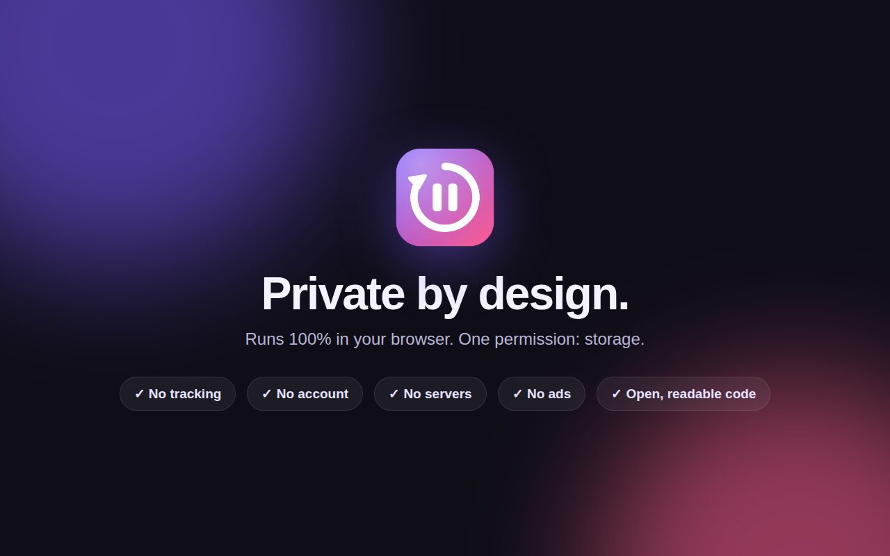

Pause when you leave.
Play nonstop when you stay.
AutoPause pauses YouTube when you switch tabs, resumes when you return, and skips the "Video paused. Continue watching?" prompt, all in one lightweight, private extension.

Two YouTube fixes. One tiny extension.
Built for lectures, tutorials, playlists, podcasts and long study sessions.
Tab Auto-Pause
Switch tabs or minimize and the video pauses. Come back and it picks up exactly where you left off.
NonStop Playback
Automatically skips "Continue watching?" on YouTube and "Still listening?" on YouTube Music.
Private by design
Runs 100% in your browser. No account, no tracking, no ads, no servers. One permission: storage.
See it in action
Your manual pauses are always respected. AutoPause only resumes what it paused.



Frequently asked questions
Quick answers about AutoPause.
How do I stop YouTube from asking "Continue watching?"
Install AutoPause and keep NonStop Playback on. It detects the "Video paused. Continue watching?" prompt and skips it automatically. With "Prevent the prompt before it appears" on, the prompt usually never shows at all.
How do I make YouTube pause when I switch tabs?
Tab Auto-Pause pauses the video as soon as you leave the tab or minimize Chrome, then resumes it when you return. You can turn auto-resume off, or also pause when the window loses focus.
Will it un-pause a video I paused myself?
Never. AutoPause only resumes videos that it paused itself. A pause from the button, the spacebar or the K key stays paused.
Does it work on YouTube Music?
Yes. The "Still listening?" blocker works on YouTube Music. Tab auto-pause for Music is an optional switch that's off by default, so background music keeps playing.
Does AutoPause collect my data?
No. It runs entirely in your browser and makes no network requests. Read the full privacy policy.
Which browsers are supported?
Google Chrome 111 or newer, and Chromium browsers that install from the Chrome Web Store, such as Microsoft Edge and Brave.